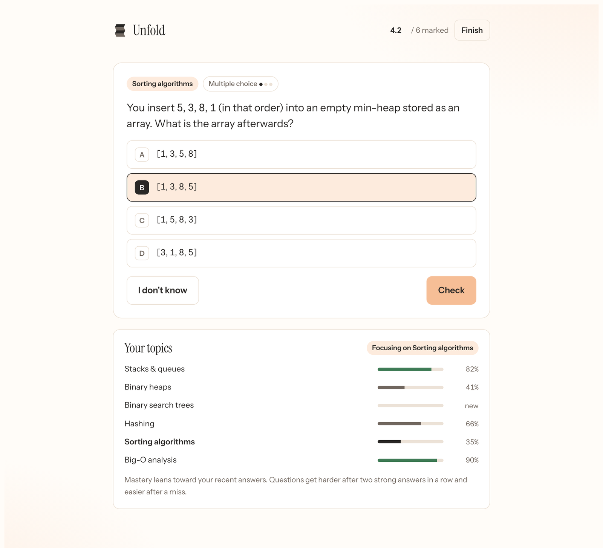
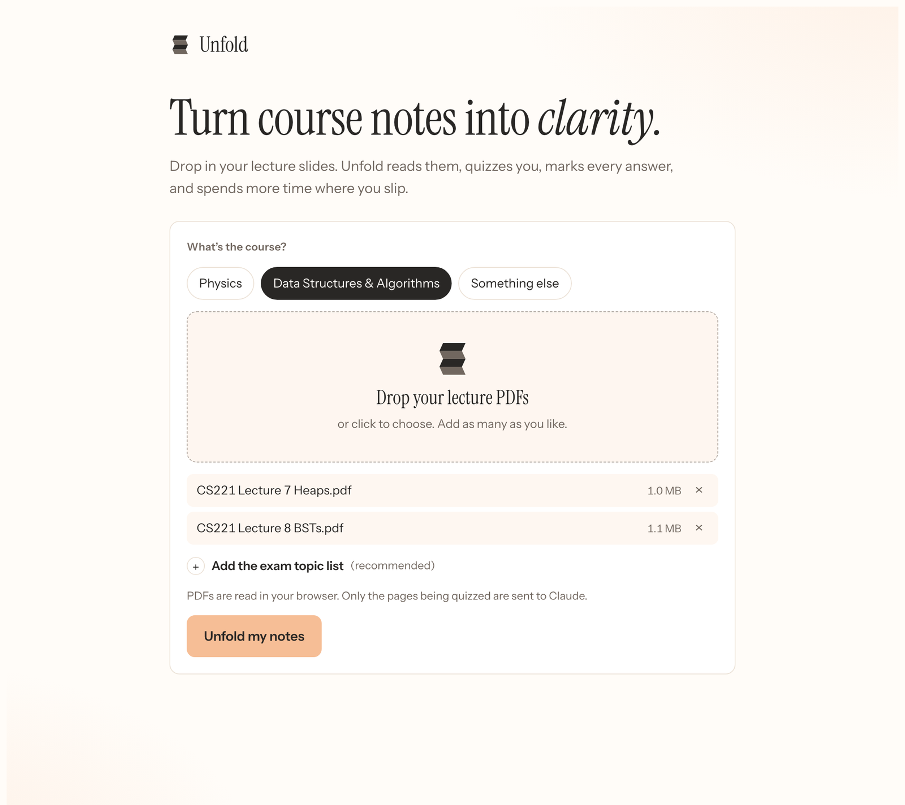
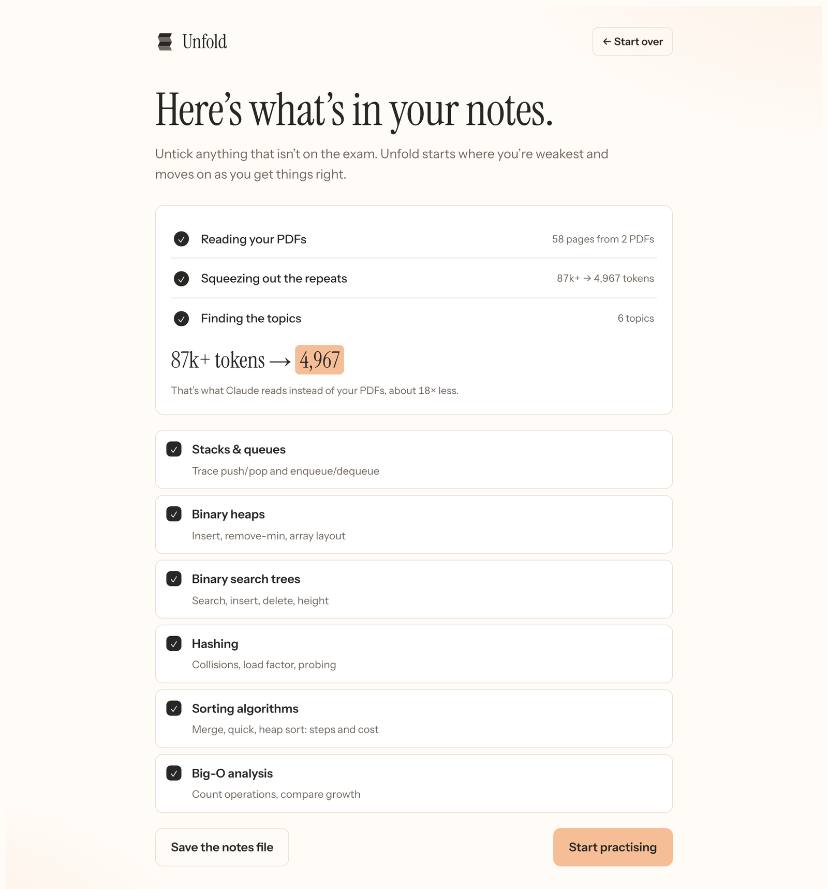
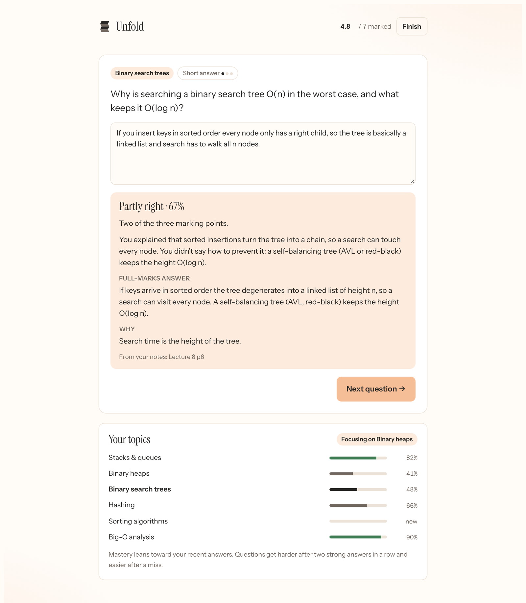

Turn course notes into clarity.
Drop in your lecture slides. Unfold reads them, quizzes you on what’s actually on the exam, marks every answer with partial credit, and spends more time where you slip.
Free. Runs inside claude.ai on your own Claude account.

From a pile of PDFs to the questions you’ll see.
Drop in your slides
Pick the course, drop in as many lecture PDFs as you have, and paste the topic list your prof gave you. The PDFs are read in your browser.

Unfold finds the topics
It strips repeated slide build-ups, headers and page numbers, then sorts the slides into exam topics. Untick anything that isn’t on the exam.

Practise where you slip
Every question comes from your own notes and names the slide it came from. Your weakest topic comes up most, until it isn’t your weakest any more.

Questions that look like your exam.
Physics
- Calculations with units. Answers within 2% count, and
3x10^8or3e8both work. - Hints on near misses. Wrong sign or off by a power of ten gets called out.
- Concept checks on directions, signs and which equation applies.
Data structures & algorithms
- Traces. The state of a stack, queue, heap or tree after a set of operations.
- Big-O and algorithm steps in the right order.
- Code reading in the language your notes use.
Marked like a TA, not a scantron.
Most quiz apps mark you wrong unless you’re perfect. Unfold gives credit for the parts you got, and tells you exactly what was missing.
Good to know.
Does it cost anything?
Unfold is free. Questions and marking run on your own Claude account, so each batch of questions and each short-answer mark uses a little of your Claude usage.
Why does it open in claude.ai?
That’s where it can ask Claude to write and mark questions for you. The first time, claude.ai asks whether Unfold may use Claude. Choose Allow.
Are my PDFs uploaded?
No. The PDFs are read in your browser. Only the text of the slides being quizzed is sent to Claude, a few pages at a time.
What about diagrams and scanned slides?
Unfold reads the text in a PDF. Slides that are only a picture, and scanned pages, come through empty, so check those yourself.
Can I keep the compressed notes?
Yes. “Save the notes file” gives you one small Markdown file of all your slides, which you can give to Claude in any chat instead of the PDFs.
Does it remember my progress?
Not yet. Progress lasts for the session; reloading starts fresh.